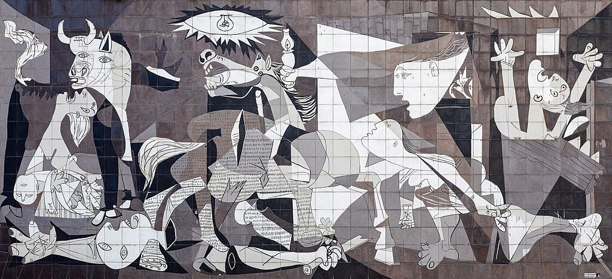
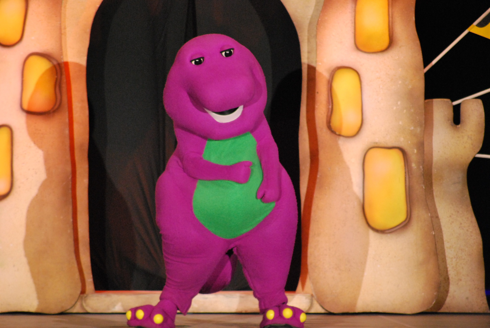

Notes
Dimensions are approximate; measurements used here are based on visual comparison and available documentation.
This work references Pablo Picasso’s Guernica.
The composition also incorporates Barney from Barney & Friends, Mickey Mouse, Tony the Tiger, the Peanuts character Charlie Brown, SpongeBob SquarePants, and Patrick Star from SpongeBob SquarePants.
Ancillary Documentation

